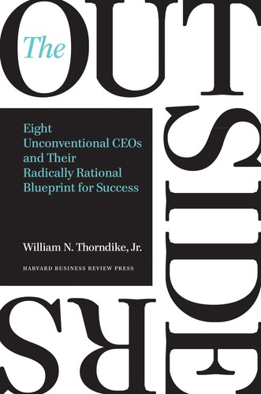

威廉·桑代克（William N. Thorndike Jr.）是波士顿私募投资公司Housatonic Partners的创始人兼管理合伙人，在接触数百家企业的过程中，他逐渐意识到：真正创造卓越长期回报的CEO，往往不是那些频繁出现在财经媒体封面、以演讲魅力著称的人物，而是一批近乎隐形的"局外人"。《局外人》出版于2012年，由哈佛商学院出版社发行，是桑代克历时多年深入研究八位杰出企业领导人后的结晶。这八位CEO分别掌舵通用电影、拉尔斯顿·普瑞纳、华盛顿邮报公司、伯克希尔·哈撒韦、通用动力、首都城市/美国广播公司、TCI电缆电视和泰利丹。他们在任期间，旗下企业股票平均回报率是同期标准普尔500指数的二十倍有余——如果1960年代初向这八家公司各投入一万美元，二十五年后每笔投资的平均价值将超过一百五十万美元。
全书的核心论点可以归结为一句话：优秀的CEO首先是资本配置者，其次才是运营管理者。桑代克提炼出这八位局外人共享的几个特征。其一，他们对每股内在价值的关注远超对营业收入或利润增速的关注，决策的锚点始终是"这笔资金投在哪里能产生最高的长期回报"。其二，他们对现金流的重视超过会计利润，深知折旧、摊销等非现金项目可以粉饰报表，真正的价值创造要靠自由现金流来衡量。其三，他们对资本配置工具的使用——收购、股票回购、有机增长、债务融资——带有外科手术式的精准，从不因市场热情而盲目扩张，却会在价格合适时大胆逆势回购自家股票。其四，他们普遍奉行高度分权的管理模式，总部人员精简至极，将运营决策权下放给一线管理者，自己则专注于资本层面的少数几个重大决策。最后，他们大多性格内向、不善自我宣传，与时代的宠儿们截然相反——而这恰恰是他们得以保持独立判断、不被市场情绪裹挟的原因之一。
《局外人》在出版之初反响平淡，却在随后数年中因口碑传播而声名大振。2012年，沃伦·巴菲特在伯克希尔·哈撒韦的股东信中向股东们郑重推荐此书，称其为"一本关于擅长资本配置的CEO的杰出著作"（An outstanding book about CEOs who excelled at capital allocation）——这是巴菲特当年股东信中仅推荐的一本书。这一背书使本书迅速成为价值投资者和企业战略研究者的必读文本。《福布斯》杂志2014年的一篇报道将其描述为"美国最重要的商业书籍之一"，分析了这本书如何在几乎没有任何宣传预算的情况下，仅凭内容口碑在商学院、投资机构和企业高层之间广泛流传。查理·芒格将本书列入他为有志于提升商业素养的读者推荐的书单，这在芒格漫长的阅读历程中并不多见。
对于关注企业价值与长期投资的读者而言，《局外人》提供的不是宏观理论框架，而是八个有血有肉的实证案例。桑代克用数字证明了一件很多人直觉上认同却缺乏系统论证的事：资本配置能力是决定企业长期价值创造的核心变量，而这种能力与企业规模、行业光环、CEO的外向程度几乎没有必然关联。书中对汤姆·墨菲掌舵首都城市的章节、对亨利·辛格尔顿经营泰利丹的叙述，已成为商学院讨论资本配置的经典案例素材。对于希望理解"一位卓越的CEO究竟应当把精力投入何处"的投资者和企业家来说，这本书是少数几部能够真正改变思维框架的作品之一。